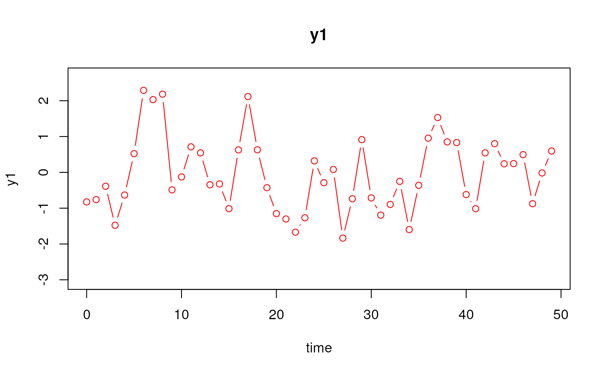
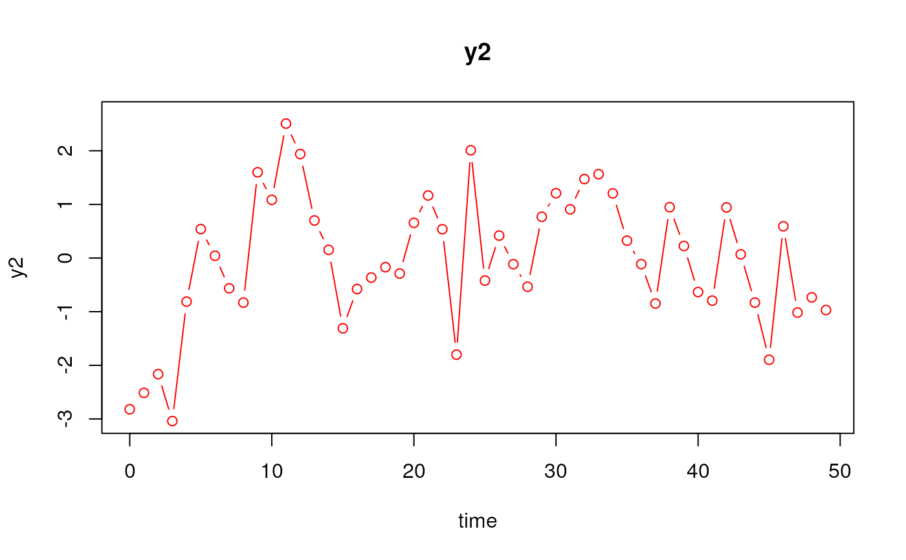
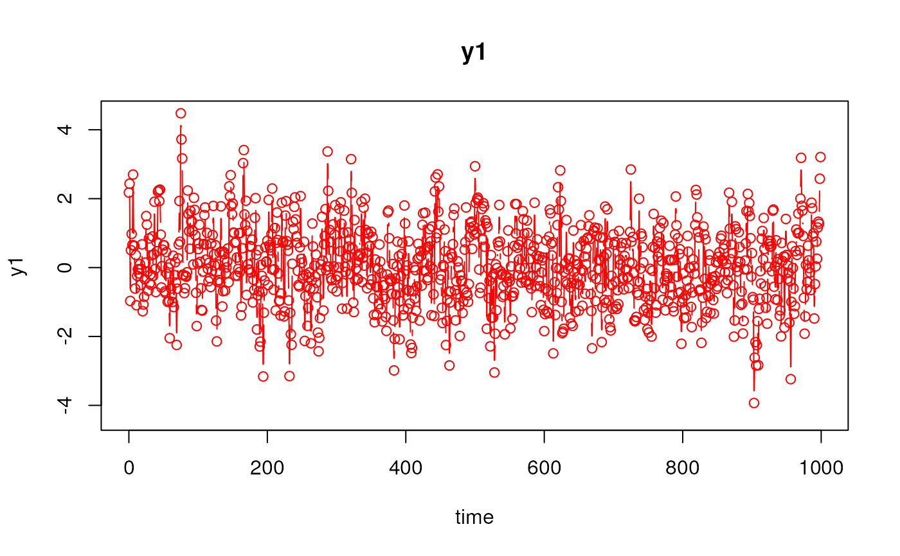
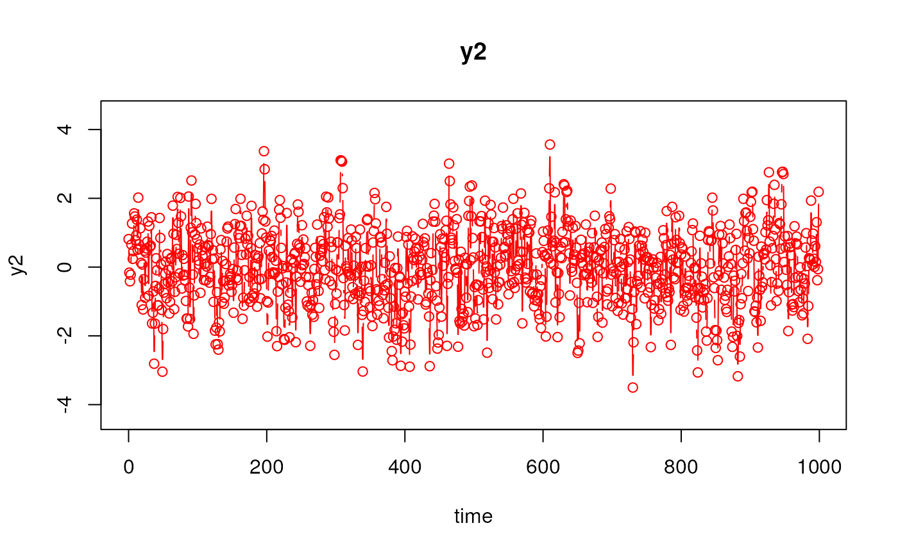
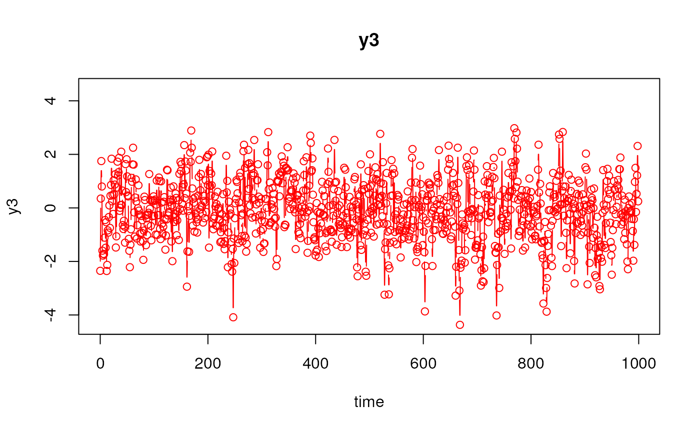
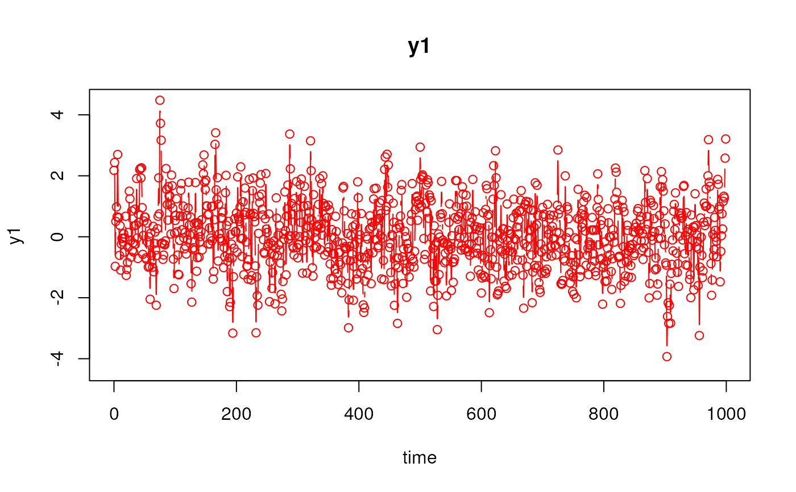
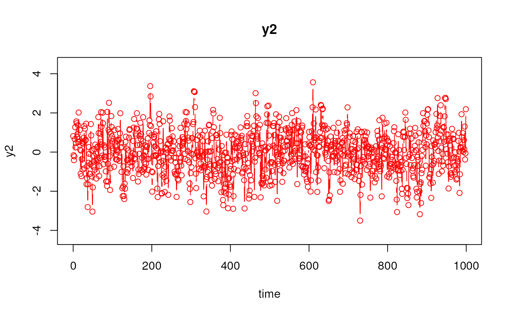
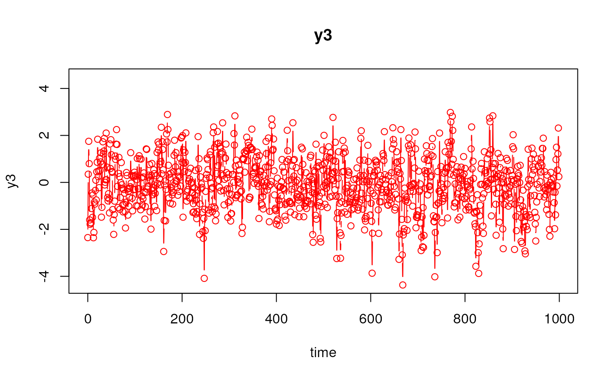

Simulate Data from the Vector Autoregressive Model using a State Space Model Parameterization (n = 1)
Source:R/simStateSpace-sim-ssm-var.R
SimSSMVAR.RdThis function simulates data from the vector autoregressive model using a state space model parameterization. See details for more information.
Arguments
- mu0
Numeric vector. Mean of initial latent variable values (\(\boldsymbol{\mu}_{\boldsymbol{\eta} \mid 0}\)).
- sigma0
Numeric matrix. The covariance matrix of initial latent variable values (\(\boldsymbol{\Sigma}_{\boldsymbol{\eta} \mid 0}\)).
- alpha
Numeric vector. Vector of intercepts for the dynamic model (\(\boldsymbol{\alpha}\)).
- beta
Numeric matrix. Transition matrix relating the values of the latent variables at time
t - 1to those at timet(\(\boldsymbol{\beta}\)).- psi
Numeric matrix. The process noise covariance matrix (\(\boldsymbol{\Psi}\)).
- gamma_eta
Numeric matrix. Matrix relating the values of the covariate matrix at time
tto the latent variables at timet(\(\boldsymbol{\Gamma}_{\boldsymbol{\eta}}\)).- x
Numeric matrix. The matrix of observed covariates in
type = 1ortype = 2. The number of rows should be equal totime + burn_in.- time
Positive integer. Number of time points to simulate.
- burn_in
Positive integer. Number of burn-in points to exclude before returning the results.
Value
Returns an object of class simstatespace
which is a list with the following elements:
call: Function call.args: Function arguments.data: Generated data which is a list of lengthn.datais a list with the following elements:id: A vector of ones of lengtht.time: A vector of time points of lengtht.y: Atbykmatrix of values for the manifest variables.eta: Atbypmatrix of values for the latent variables.x: Atbyjmatrix of values for the covariates.
fun: Function used.
Details
The measurement model is given by $$ \mathbf{y}_{t} = \boldsymbol{\eta}_{t} . $$
The dynamic structure is given by $$ \boldsymbol{\eta}_{t} = \boldsymbol{\alpha} + \boldsymbol{\beta} \boldsymbol{\eta}_{t - 1} + \boldsymbol{\zeta}_{t} \quad \mathrm{with} \quad \boldsymbol{\zeta}_{t} \sim \mathcal{N} \left( \mathbf{0}, \boldsymbol{\Psi} \right) $$ where \(\boldsymbol{\eta}_{t}\), \(\boldsymbol{\eta}_{t - 1}\), and \(\boldsymbol{\zeta}_{t}\) are random variables, and \(\boldsymbol{\alpha}\), \(\boldsymbol{\beta}\), and \(\boldsymbol{\Psi}\) are model parameters. \(\boldsymbol{\eta}_{t}\) is a vector of latent variables at time \(t\), \(\boldsymbol{\eta}_{t - 1}\) is a vector of latent variables at time \(t - 1\), and \(\boldsymbol{\zeta}_{t}\) is a vector of dynamic noise at time \(t\). \(\boldsymbol{\alpha}\) is a vector of intercepts, \(\boldsymbol{\beta}\) is a matrix of autoregression and cross regression coefficients, and \(\boldsymbol{\Psi}\) is the covariance matrix of \(\boldsymbol{\zeta}_{t}\).
Note that when gamma_eta and x are not NULL,
the dynamic structure is given by
$$
\boldsymbol{\eta}_{t}
=
\boldsymbol{\alpha}
+
\boldsymbol{\beta}
\boldsymbol{\eta}_{t - 1}
+
\boldsymbol{\Gamma}_{\boldsymbol{\eta}}
\mathbf{x}_{t}
+
\boldsymbol{\zeta}_{t}
\quad
\mathrm{with}
\quad
\boldsymbol{\zeta}_{t}
\sim
\mathcal{N}
\left(
\mathbf{0},
\boldsymbol{\Psi}
\right)
$$
where
\(\mathbf{x}_{t}\) is a vector of covariates at time \(t\),
and \(\boldsymbol{\Gamma}_{\boldsymbol{\eta}}\) is the coefficient matrix
linking the covariates to the latent variables.
References
Chow, S.-M., Ho, M. R., Hamaker, E. L., & Dolan, C. V. (2010). Equivalence and differences between structural equation modeling and state-space modeling techniques. Structural Equation Modeling: A Multidisciplinary Journal, 17(2), 303–332. doi:10.1080/10705511003661553
See also
Other Simulation of State Space Models Data Functions:
OU2SSM(),
SimSSMFixed(),
SimSSMIVary(),
SimSSMLinGrowthIVary(),
SimSSMLinGrowth(),
SimSSMOUFixed(),
SimSSMOUIVary(),
SimSSMOU(),
SimSSMVARFixed(),
SimSSMVARIVary(),
SimSSM()
Examples
# prepare parameters
set.seed(42)
k <- 3
iden <- diag(k)
null_vec <- rep(x = 0, times = k)
mu0 <- null_vec
sigma0 <- iden
alpha <- null_vec
beta <- diag(x = 0.5, nrow = k)
psi <- iden
time <- 50
burn_in <- 0
gamma_eta <- 0.10 * diag(k)
x <- matrix(
data = rnorm(n = k * (time + burn_in)),
ncol = k
)
# No covariates
ssm <- SimSSMVAR(
mu0 = mu0,
sigma0 = sigma0,
alpha = alpha,
beta = beta,
psi = psi,
time = time,
burn_in = burn_in
)
plot(ssm)


 # With covariates
ssm <- SimSSMVAR(
mu0 = mu0,
sigma0 = sigma0,
alpha = alpha,
beta = beta,
psi = psi,
gamma_eta = gamma_eta,
x = x,
time = time,
burn_in = burn_in
)
plot(ssm)



# With covariates
ssm <- SimSSMVAR(
mu0 = mu0,
sigma0 = sigma0,
alpha = alpha,
beta = beta,
psi = psi,
gamma_eta = gamma_eta,
x = x,
time = time,
burn_in = burn_in
)
plot(ssm)


